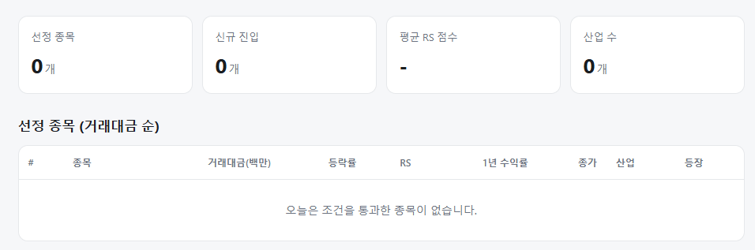
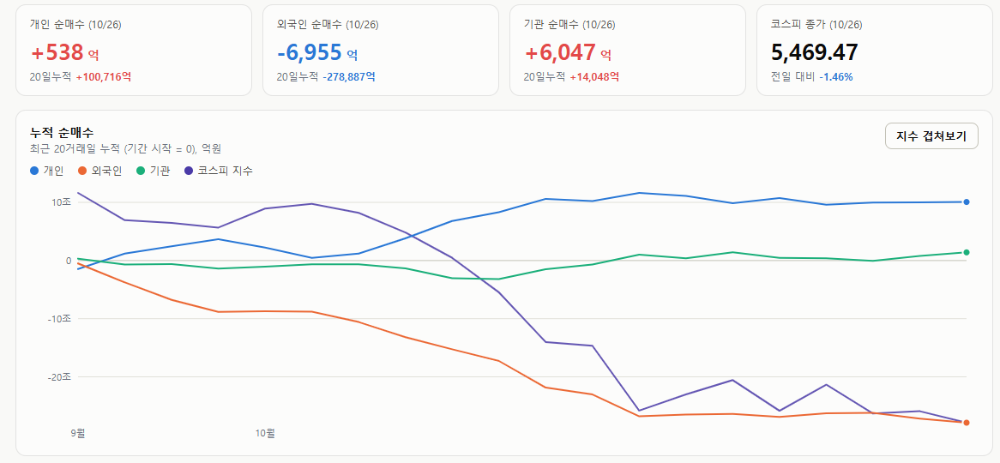
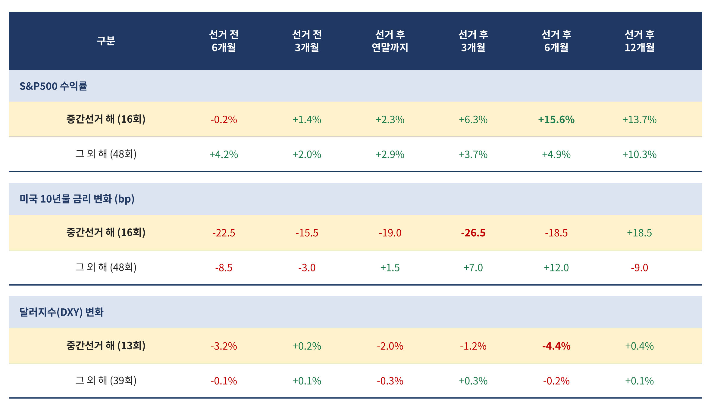

매일의 주도주 정리를 위해 기록합니다.
연속적으로 나온 종목들 또는 상승 후 조정받는 종목 위주로 리서치 해보시면 좋을 것 같습니다.

*오늘 선정된 종목은 없습니다.
#주도섹터
건강관리기술 및 생명보험
주요 업종 및 종목: 건강관리기술(+15.37%), 디스플레이패널(+1.96%), 생명보험(+0.61%), 삼성생명(+0.61%), 삼성물산(+1.39%).
분석: 시장 전반의 폭락 속에서 건강관리기술 업종이 +15.37% 폭등하며 단기 회피성 자금을 흡수했습니다. 생명보험 등 일부 방어주도 선방했으며, 지주사격인 삼성물산(+1.39%)과 삼성생명(+0.61%)이 지수 하락을 소폭 완충했습니다.
#조정섹터
산업재 전반 및 반도체 메가 캡
주요 업종 및 종목: 에너지장비및서비스(-6.21%), 우주항공과국방(-4.74%), 조선(-4.62%), 핸드셋(-3.77%), HD현대중공업(-5.08%), 한화에어로스페이스(-4.04%), KB금융(-3.79%), 두산에너빌리티(-3.03%), 신한지주(-2.95%), 현대차(-2.54%), 삼성전자우(-2.20%), LG에너지솔루션(-2.09%), 삼성전자(-1.16%).
분석: 에너지장비및서비스(-6.21%), 우주항공과국방(-4.74%), 조선(-4.62%) 등 기존 산업재 주도주들이 급락 최상단을 장악했습니다. 반도체 메가 캡인 삼성전자(-1.16%), 금융(KB금융, 신한지주), 2차전지(LG에너지솔루션), 방산(한화에어로스페이스) 등 시총 상위주 전반에서 거친 매물이 쏟아지며 코스피 5,500선 붕괴를 견인했습니다.
#수급동향

코스피 지수는 전 거래일 대비 -1.46% 하락한 5,469.47로 마감하며 5,500선 지지선을 하향 돌파했습니다. 코스닥 지수 역시 -3.26% 급락한 727.22를 기록하며 투자 심리가 급격히 냉각되었습니다.
유가증권시장에서 외국인 투자자는 6,955억 원(20일 누적 -27조 8,887억 원)을 순매도하며 대형주 중심의 패시브 이탈을 이어갔습니다. 기관 투자자는 6,047억 원(20일 누적 +1조 4,048억 원)을 순매수하며 방어에 나섰고, 개인 투자자는 538억 원을 소폭 순매수했습니다.
중간선거가 있는 해, 시장은 선거 뒤에 올랐다 — 그런데 올해는 금리와 달러가 다르다
미국 중간선거가 11월 3일입니다. 하나증권이 1960년대 이후 중간선거가 있는 해 16번과 없는 해 48번을 나눠 S&P500, 미국 10년물 금리, 달러지수가 선거 전후 어떻게 움직였는지 정리했습니다. 세 가지 자산에서 같은 패턴이 나옵니다. 선거 전에는 약하고 선거 뒤에 강하다. 그리고 올해는 그 패턴과 다른 점이 둘 있습니다.

① 주식 — 선거 전 6개월 -0.2%, 선거 후 6개월 +15.6%
중간선거 해는 선거 전 6개월 수익률이 사실상 0입니다. 다른 해의 +4.2%와 비교하면 선거를 앞둔 반년이 그만큼 무겁다는 뜻입니다. 그런데 선거가 끝나면 뒤집힙니다. 선거 후 6개월 수익률이 +15.6%로 다른 해의 세 배입니다. 12개월로 늘려도 +13.7%로 여전히 높습니다. 선거 전에 눌린 만큼 선거 뒤에 돌아오는 구조입니다.
이유는 세 가지가 겹칩니다. 선거 전에는 정책 불확실성이 가격을 누르고, 선거 뒤에는 그 불확실성이 어느 쪽으로든 해소됩니다. 중간선거는 여당이 지는 경우가 대부분이라 의회가 갈리고(그리드록), 시장은 큰 정책 변화가 없는 상태를 선호합니다. 그리고 집권 3년차는 대통령이 재선을 위해 경기를 띄우는 해라, 선거 뒤 6개월이 그 시작점과 겹칩니다.
② 금리 — 선거 전부터 내려가고, 선거 뒤에도 내려간다
중간선거 해의 금리는 선거 전 6개월부터 선거 후 6개월까지 일관되게 내려갑니다. 특히 선거 후 3개월 -26.5bp는 다른 해의 +7.0bp와 방향이 반대입니다. 선거 뒤 주식이 오르는 데 금리 하락이 같이 작동했다는 뜻입니다. 12개월에서 +18.5bp로 반전하는 것은 경기가 다시 좋아지면서 금리가 따라 올라간 결과로 읽힙니다.
③ 달러 — 선거 후 6개월 -4.4%
달러도 금리와 같은 모양입니다. 선거 전 6개월 -3.2%, 선거 후 6개월 -4.4%. 다른 해는 거의 움직이지 않습니다. 금리가 내리면 달러가 약해지고, 달러가 약해지면 신흥국으로 돈이 돕니다. 중간선거 뒤 6개월은 역사적으로 미국 주식 상승, 금리 하락, 달러 약세가 한 묶음으로 왔습니다. 한국 같은 신흥국 입장에서는 가장 좋은 조합입니다.
④ 올해는 두 가지가 다르다
패턴대로라면 지금쯤 금리와 달러는 내려와 있어야 합니다. 그런데 올해는 반대입니다. 미국 10년물은 10월초 5%를 넘었고, 달러는 강세를 유지중입니다. 중간선거 해의 전형적인 선거 전 모습은 아닙니다. 인플레이션 재확산, 연준의 인상 재개 우려, AI 채권 공급이라는 올해만의 변수가 계절성을 덮었습니다.
주식도 지수로만 보면 다릅니다. S&P500은 사상 최고치에서 1.5% 안에 있습니다. 선거 전 약세가 지수에는 없었습니다. 대신 그 약세는 반도체와 한국에 집중됐습니다. SOX는 고점 대비 -24%, 코스피는 7거래일 -20.8%였습니다. 선거 전 조정이 지수 전체가 아니라 주도주에서 일어난 셈입니다.
이 차이가 두 가지 해석을 만듭니다.
낙관적으로 보면, 금리와 달러가 아직 패턴대로 움직이지 않았으니 선거 뒤에 그 움직임이 몰려서 올 수 있습니다. 금리 하락과 달러 약세가 뒤늦게 시작되면 가장 많이 눌린 반도체와 한국이 가장 크게 받습니다.
비관적으로 보면, 선거 후 +15.6%의 절반은 금리 하락이 만든 것인데, 올해 금리가 내려오지 않으면 주식 패턴도 절반만 작동합니다.
여전히 금리의 방향이 시장의 중요한 축을 차지하고 있습니다.
오늘 하루도 수고하셨습니다.
활기찬 한주 보내세요!